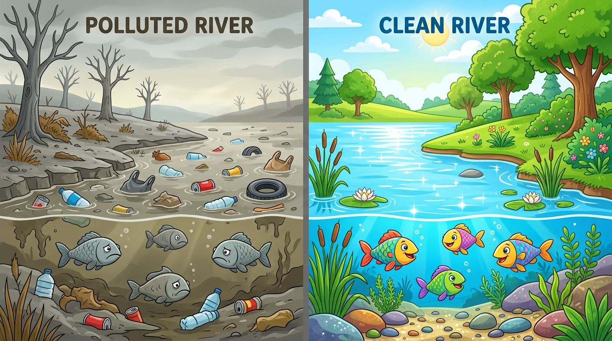

Peta Misi Penyelidikan Lingkungan
Selesaikan 3 Misi Utama untuk meraih Lencana Detektif Lingkungan Bintang 5
Misi 1: Temukan Masalah
Fokus: Mengamati, Mempertanyakan, & Analisis Bukti AI.
- Analisis perbandingan Sungai Tercemar vs Sungai Bersih
- Investigasi 4 Kartu Kasus & Dampak Rantai Makanan
- Tanya AI "Asisten Peneliti" & Verifikasi Fakta
Misi 2: Rancang Solusi
Fokus: Merencanakan, Brainstorming AI, & Pemrosesan Data.
- Menyusun Diagram Sebab-Akibat (Fishbone Diagram)
- Brainstorming Ide Kampanye bersama AI Peneliti
- Memilah, menyaring, dan memilih solusi aksi nyata
Misi 3: Kampanye Detektif
Fokus: Mengomunikasikan, Mengkreasi Poster/Video, & Refleksi.
- Membuat Desain Poster Digital Kampanye Sungai
- Latihan Presentasi & Gelar Karya antar kelompok
- Asesmen Sejawat & Refleksi Kritis Penggunaan AI
🌟 Buku Catatan Detektif Tirta
Progres: 0% SelesaiMisi 1: Menyelidiki Kasus Sungai Tercemar
Amati laboratorium bukti visual, baca kartu petunjuk kasus, dan ajukan pertanyaan kritis ke AI Asisten Peneliti.
Perbandingan Nyata: Sungai Tercemar vs Sungai Bersih

💡 Petunjuk Pengamatan Detektif:
Klik tombol ⚠️ Zona Bahaya atau 🌿 Zona Alami pada gambar di atas untuk melihat analisis mikroskopis dari Detektif Tirta.
🗂️ Berkas Rahasia: 4 Kartu Petunjuk Kasus
Buka setiap amplop kartu untuk mengumpulkan bukti penyelidikan kelompokmu.
Kantong & Botol Plastik Sekali Pakai
Ditemukan ratusan botol plastik menyumbat gorong-gorong hilir sungai...
Klik untuk Buka Amplop 📂Temuan Fakta Laboratorium:
Plastik butuh 100 - 500 tahun untuk terurai. Di air, plastik terpecah oleh matahari menjadi butiran sangat kecil bernama mikroplastik yang tertelan ikan kecil.
Busa Detergen & Limbah Cuci Rumah Tangga
Permukaan air berbusa tebal putih berbau menyengat dekat pemukiman...
Klik untuk Buka Amplop 📂Temuan Fakta Laboratorium:
Limbah detergen mengandung fosfat tinggi. Ini memicu ledakan eceng gondok liar (eutrofikasi) yang menutupi sinar matahari dan menyedot oksigen air hingga ikan mati lemas.
Bangkai Ikan & Hilangnya Capung Sungai
Warga melaporkan capung dan berang-berang sudah tidak pernah terlihat lagi...
Klik untuk Buka Amplop 📂Temuan Fakta Laboratorium:
Capung dan larva serangga air adalah bioindikator alami. Mereka hanya mau bertelur di air bersih beroksigen. Ketiadaan capung adalah tanda pasti air tercemar racun kimiawi!
Bahaya Banjir & Wabah Penyakit Warga
Anak-anak di bantaran sungai mengalami gatal kulit dan diare setelah banjir...
Klik untuk Buka Amplop 📂Temuan Fakta Laboratorium:
Endapan sampah mendangkalkan dasar sungai (sedimentasi) hingga daya tampung air turun 70%. Air tergenang menjadi sarang bakteri E. coli dan nyamuk demam berdarah.
AI Asisten Peneliti (Detektif Tirta GPT)
🟢 Mode Mitra Berpikir Guru & Siswa SiapHalo detektif cilik! Aku adalah Asisten Peneliti bertenaga AI. Silakan pilih salah satu pertanyaan di atas, atau ketik pertanyaan kelompokmu di bawah ini. Guru dan timmu wajib memverifikasi apakah jawabanku cocok dengan buku materi!
Misi 2: Rancang Solusi Nyata & Rantai Penyelamatan
Petakan akar masalah dengan Diagram Tulang Ikan (Fishbone), lalu gunakan AI untuk brainstorming kampanye kreatif ramah anak.
1. Diagram Tulang Ikan Sebab-Akibat (Fishbone Diagram)
Klik setiap cabang tulang untuk mengungkap akar penyebab utama pencemaran sungai:
Sungai Rusak & Ikan Mati
Klik salah satu tulang di atas untuk mempelajari analisis mendalam serta ide intervensi solusinya.
2. Rantai Makanan yang Terputus Akibat Sampah
Perhatikan aliran energi dan bahaya biomagnifikasi (racun yang menumpuk di tubuh predator):
3. Generator Ide Kampanye Cerdas
Minta AI memberi 5 ide kampanye. Ingat: Pilihlah dengan kritis, modifikasi, atau tolak yang tidak realistis!
Misi 3: Gelar Karya & Kampanye Penyelamatan Sungai
Rancang poster kampanye digital, siapkan orasi/video pendek 60 detik, dan lakukan penilaian sejawat.
🎨 Studio Desain Poster Detektif
Kombinasikan teks informatif, slogan memikat, dan ilustrasi lingkungan.SELAMATKAN SUNGAI KITA!
"Satu Sampah yang Kau Buang, Membunuh Ribuan Kehidupan Air"
Lembar Penilaian Gelar Karya Kelompok Lain
Berikan umpan balik yang membangun untuk kelompok yang sedang tampil presentasi di depan kelas:
| Kriteria Penilaian | Skor 1 (Perlu Bimbingan) | Skor 2 (Cukup) | Skor 3 (Baik) | Skor 4 (Sangat Baik) | Pilih Skor |
|---|---|---|---|---|---|
| Ketepatan Konsep IPAS Sebab-akibat & ekosistem |
Banyak miskonsepsi | Penjelasan sebab minim | Sebab-akibat cukup tepat | Penjelasan akurat, ilmiah, & lengkap | |
| Kreativitas Solusi Keaslian gagasan kampanye |
Meniru mentah AI | Gagasan umum/biasa | Solusi menarik & realistis | Ide orisinal, berdampak, & unik | |
| Pemanfaatan Multimedia Teks, gambar, audio, layout |
Hanya satu jenis media | Media kurang rapi | Media padu & jelas | Sangat harmonis, visual WOW & memikat | |
| Berpikir Kritis terhadap AI Menyaring & mengoreksi AI |
Menerima semua saran AI | Sedikit modifikasi | Memilih ide dengan alasan | Mengoreksi kekeliruan AI dengan argumen kuat | |
| Gotong Royong / Kolaborasi Kekompakan saat presentasi |
Hanya 1 anak bicara | Kerjasama pasif | Semua anggota terlibat | Pembagian peran solid, saling melengkapi |
Kuis Detektif Lingkungan
Uji pemahaman konsep IPAS dan kecakapan Bahasa Indonesia. Dapatkan skor tertinggi untuk kelompokmu!
Tantangan Bukti Detektif Fase C
Kuis ini terdiri dari 5 butir soal pilihan ganda bergradasi (C2 - C4). Setiap soal menguji kemampuan analitis terhadap pencemaran ekosistem sungai dan teks eksplanasi.
Pertanyaan akan muncul di sini...
Luar Biasa, Detektif Hebat!
Kelompokmu membuktikan nalar kritis tingkat tinggi dalam membedakan fakta pencemaran sungai.
Panduan Fasilitasi Guru & Perangkat Cetak
Pedoman implementasi 3 pertemuan, diferensiasi belajar, mitigasi etika AI, serta modul dan LKPD siap cetak.
Misi 1: Mengamati & Mempertanyakan
- 00-10 mnt: Tayangkan visual komparasi sungai / putar narasi suara. Siswa merumuskan 3 rasa ingin tahu.
- 10-35 mnt: Penyelidikan kelompok menggunakan 4 Kartu Bukti (Plastik, Detergen, Bioindikator Capung, Dampak Kesehatan).
- 35-55 mnt: Guru memproyeksikan layar untuk sesi "Tanya AI Asisten". Siswa menguji jawaban AI terhadap buku siswa (Literasi Kritis).
- 55-70 mnt: Refleksi dan kuis formatif cepat.
Misi 2: Merencanakan & Memproses Data
- 00-15 mnt: Review temuan Misi 1. Guru memandu pemodelan Diagram Tulang Ikan (Fishbone).
- 15-45 mnt: Brainstorming dengan AI: Menghasilkan 5 alternatif kampanye ramah anak. Kelompok memilih dan memodifikasi solusi.
- 45-70 mnt: Penyusunan draf rancangan produk (Poster digital, poster gambar manual, atau skrip orasi 60 detik).
Misi 3: Mengomunikasikan & Refleksi
- 00-20 mnt: Finalisasi produk poster atau rekaman suara orasi kampanye.
- 20-55 mnt: "Gelar Karya Detektif": Setiap kelompok presentasi 3 menit. Kelompok lain menilai dengan Rubrik Sejawat.
- 55-70 mnt: Refleksi filosofis etika AI: "Apa yang dibantu AI? Apa yang harus tetap kita putuskan sendiri dengan nurani manusia?"
Modul Pembelajaran: "Detektif Lingkungan, Misi Sungai Bersih"
Kelas VI SD • Fase C • Integrasi IPAS & Bahasa IndonesiaI. INFORMASI UMUM
| Mata Pelajaran | IPAS (Ilmu Pengetahuan Alam & Sosial) diintegrasikan dengan Bahasa Indonesia |
| Fase / Kelas | Fase C / Kelas VI (Enam) SD |
| Alokasi Waktu | 3 Pertemuan (6 - 8 JP @ 35 Menit) |
| Model Pembelajaran | Project-Based Learning (PjBL) terintegrasi Inquiry & AI-Assisted Learning |
| Profil Pelajar Pancasila | Bernalar Kritis, Kreatif, Gotong Royong, Berakhlak Mulia (Peduli Lingkungan) |
II. CAPAIAN PEMBELAJARAN (CP) & TUJUAN PEMBELAJARAN
- IPAS (Pemahaman): Peserta didik mengidentifikasi komponen ekosistem dan interaksinya, serta menganalisis dampak aktivitas manusia terhadap lingkungan perairan sungai.
- IPAS (Keterampilan Proses): Mengamati fenomena, mempertanyakan, merencanakan penyelidikan, memproses data sebab-akibat, mengevaluasi fakta, dan mengomunikasikan solusi.
- Bahasa Indonesia: Menyimak informasi multimedia, membaca kritis teks laporan kasus, serta menulis teks persuasif/slogan kampanye dan mempresentasikannya secara visual.
III. LANDASAN TEORETIS & PEDAGOGIS
- Cognitive Theory of Multimedia Learning (Richard Mayer): Menggunakan prinsip Modality (teks visual didukung narasi audio), Coherence (menghilangkan elemen pengganggu agar memori kerja anak fokus), dan Segmenting (pembelajaran dibagi menjadi 3 misi bertahap).
- Teori Kognitif Jean Piaget: Karakteristik usia 11-12 tahun berada pada masa transisi konkret ke formal awal. Dimulai dari fenomena nyata yang dapat diamati (sampah di selokan sekitar sekolah), lalu diarahkan ke abstraksi sebab-akibat logis.
- Scaffolding & ZPD (Lev Vygotsky): AI bertindak sebagai alat perancah (scaffold) untuk memantik ide, bukan pengganti proses berpikir. Diskusi kelompok terarah memfasilitasi interaksi sosial teman sebaya.
- Model TPACK & SAMR: Pemanfaatan AI bukan sekadar substitusi buku, melainkan Modification dan Redefinition di mana siswa berlatih menjadi kurator kritis data AI.
IV. MITIGASI ETIKA & KEAMANAN AI UNTUK ANAK SD
- Privasi Data Anak: Siswa tidak membuat akun atau memasukkan data pribadi ke AI. Seluruh interaksi dipandu guru melalui proyektor / platform tertutup ini.
- Mencegah Ketergantungan Jawaban Instan: AI ditempatkan pada fase pemantik pertanyaan dan perbendaharaan ide. Siswa wajib memverifikasi kebenaran fakta menggunakan buku siswa.
- Inklusivitas & Hambatan Layar: Media dirancang responsif, hemat bandwidth, mendukung Text-to-Speech untuk anak lambat membaca, dan 100% dapat dicetak untuk mode luring (offline).
Buku Kerja Detektif Cilik (Siap Cetak)
Nama Detektif: Detektif Cilik Regu Tim: 🦅 Tim Elang Air Kelas: VI SD
Anggota Tim: 1. ______________ 2. ______________ 3. ______________ 4. ______________
Tugas 1: Catat 3 benda asing yang paling merusak ekosistem sungai berdasarkan hasil pengamatan gambar dan kartu kasus!
2. ________________________________________________________________
3. ________________________________________________________________
Tugas 2: Uji Jawaban AI Detektif Tirta! Apa pertanyaan yang kelompokmu ajukan ke AI? Apakah jawabannya benar menurut buku pelajaran? Berikan alasan!
Hasil Verifikasi: [ ] Sesuai Fakta [ ] Perlu Dikoreksi
Catatan Kelompok: __________________________________________________